"Part communicator, part engineer — I love building things that solve real problems."
I am a first-year Mechatronics Engineering student currently completing a Summer Internship at
Tinkerers' Lab, Sanjivani University. My interest lies at the intersection of
electronics, programming, and physical systems — where code meets the real world.
I enjoy working on hands-on projects and believe the best way to learn is by building.
Whether it is a radar system on Arduino or a 3D model in Fusion 360, I approach every
challenge with curiosity and a willingness to figure things out from scratch.
CommunicationBasics of ProgrammingArduino & HardwareProblem SolvingTeamwork3D ModellingVersion Control (Git)
Projects
📡
Radar System using Arduino
Built a functional radar display using an HC-SR04 ultrasonic sensor mounted on a servo motor,
with real-time visualization rendered in Processing IDE. The system sweeps 180° and detects
nearby objects, displaying their distance and angle on screen.
Arduino UNOHC-SR04Servo MotorProcessing IDE
✓ Completed
🤖
Obstacle Avoiding Robot with Voice Control
Designed and assembled a robot that autonomously detects and avoids obstacles using ultrasonic
sensors, while also accepting voice commands for directional control. Combined embedded
programming with basic speech recognition for a hands-free experience.
ArduinoHC-SR04Speech RecognitionMotor Driver
✓ Completed
🪖
Rider Safety Helmet
ESP32-based smart helmet with MPU-6050 impact detection via jerk calculation, Neo-6M GPS
tracking, and SIM800L GSM for automatic SMS/call alerts on crash detection. Trilingual
voice messages in Marathi, Hindi, and English.
ESP32MPU-6050Neo-6M GPSSIM800L
↻ Ongoing
Internship Log
// tap a week to see day-by-day entries
📘
18 – 22 May 2026
Week 1
GitHub & VS Code, Inkscape, Fusion 360, 3D Printing with Bambu Studio.
Three weeks at Tinkerers' Lab was one of the most hands-on and eye-opening learning experiences I have had as
an engineering student. Before this internship, I had only worked on individual hobby projects at home. Here, I
was surrounded by professional-grade tools, experienced mentors, and a lab culture that genuinely encouraged
curiosity and experimentation.
Technical Skills Gained
I came in knowing the basics of Arduino and programming, but left with a much broader toolkit. I learned how to
use Git and GitHub for version control — a skill that every developer needs but very few
diploma students learn in first year. I got hands-on time with Inkscape for vector design and
Autodesk Fusion 360 for 3D parametric modelling, both of which I had never used before.
Working with the Bambu Lab A1 Mini and H2D 3D printers gave me a real understanding of
additive manufacturing — from choosing the right filament to understanding why print speed and bed temperature
matter. The laser cutting session introduced me to subtractive manufacturing and showed me how a digital design
in LaserCAD becomes a physical cut piece within minutes.
On the electronics side, spending time with the ESP32 and connecting it to Firebase opened up
a whole new world of wireless embedded systems and cloud-connected IoT beyond the standard Arduino UNO I had
worked with before.
Beyond the Technical
The Design Thinking session with Prof. Srilalitha Girija Kumari Sagi was a turning point in how I think about
engineering problems. It taught me that the best solution is not always the most technically impressive one — it
is the one that actually solves the right problem for the right person.
I also learned the value of documentation. Building this portfolio — writing about each day,
capturing screenshots and videos, explaining concepts in my own words — forced me to deeply understand
everything I was doing rather than just going through the motions.
What's Next
I plan to continue building on everything I learned here. My immediate next steps are to complete a more
advanced project combining the servo motor, ultrasonic sensor, ESP32, and Firebase into a single system. I also
want to design a complete enclosure for it in Fusion 360 and have it 3D printed — bringing together nearly
everything from this internship into one project.
I am grateful to Tinkerers' Lab, Sanjivani University and all the mentors who guided me
through these weeks. This experience has made me significantly more confident in both my technical abilities and
my approach to problem-solving.
← Back to Home
Week 1
18 – 22 May 2026 · Sat 23 May off (1st Saturday)
🐙
Mon · 18 May
Day 1 — GitHub & VS Code
Set up Git, GitHub, and VS Code; pushed first repo and enabled GitHub Pages.
Open day →
✏️
Tue · 19 May
Day 2 — Inkscape & Fusion 360
Vector graphics with Inkscape, intro to parametric 3D CAD in Fusion 360.
Open day →
☕
Wed · 20 May
Day 3 — Fusion 360 Hands-On
Designed a mug from scratch — sketch, revolve, extrude, and handle sweep.
Open day →
🎨
Thu · 21 May
Day 4 — Logo Design in Inkscape
Designed a custom logo from scratch and exported it as an SVG.
Open day →
🖨️
Fri · 22 May
Day 5 — 3D Printing with Bambu Studio
Sliced and printed an STL model on the Bambu Lab A1 Mini.
Open day →
← Back to Home
Week 2
25 – 30 May 2026 · Saturday worked (2nd Saturday)
🖨️
Mon · 25 May
Day 1 — 3D Printers at Tinkerers' Lab
Overview of the A1, A1 Mini, P1S, H2D lineup and filament types.
Open day →
📱
Tue · 26 May
Day 2 — Phone Stand Design in Fusion 360
Designed a personalised phone stand and printed it on the H2D.
Open day →
💡
Wed · 27 May
Day 3 — Design Thinking Session
Expert session with Prof. Srilalitha Girija Kumari Sagi on Innovate · Empathize · Implement.
Open day →
🔥
Thu · 28 May
Day 4 — Laser Cutting
CO2 laser cutter fundamentals — LaserCAD, chiller, compressor, cutting vs. engraving.
Open day →
🔌
Fri · 29 May
Day 5 — Arduino IDE & Microcontrollers
Installed Arduino IDE, blinked an LED, intro to microcontroller boards.
Open day →
🌡️
Sat · 30 May
Day 6 — ESP32 + Firebase Realtime Database
Connected ESP32 + DHT11 to Firebase and built a live web dashboard.
Open day →
← Back to Home
Week 3
1 – 5 June 2026 · Sat 6 June off (3rd Saturday)
🧠
Mon · 1 June
Day 1 — Microcontrollers, Actuators & Sensors
Physical AI, MCU vs. MPU, Arduino UNO & ESP32 specs.
Open day →
⚙️
Tue · 2 June
Day 2 — Servo Motor & Radar Build
SG90 servo deep-dive, sweep code, and a radar attempt with an ultrasonic sensor.
Open day →
📏
Wed · 3 June
Day 3 — Ultrasonic Sensor & Accelerometer
HC-SR04 distance measurement and ADXL345 3-axis accelerometer readings.
Open day →
🧩
Thu · 4 June
Day 4 — Edge Computing Session
Edge Impulse session with Prof. Jaydeep Ashtekar — ML running on microcontrollers.
Open day →
🔧
Fri · 5 June
Day 5 — First Soldering Session
First hands-on soldering practice — header pins, clean joints vs. cold joints.
Open day →
← Back to Home
Week 4
8 June 2026 onward · ongoing
🪖
Mon · 8 June
Day 1 — Rider Safety Helmet Kickoff
Officially started the helmet project — components collected, plan laid out.
Open day →
📜
Tue · 9 June
Day 2 — Intellectual Property Rights Session
Expert session with Dr. M Sujith on patents, trademarks, and copyrights.
Open day →
🔩
Wed · 10 June
Day 3 — Soldering on Zero PCB
Soldered all helmet components onto a Zero PCB; mapped how every sensor talks to the ESP32.
Open day →
🌐
Thu · 11 June
Day 4 — Digital Visibility Session
Expert session with Prof. Dhananjay Kumbhar on building a professional online presence.
Open day →
← Back to Week 1
Week 1 — Day 1
Monday, 18 May 2026 · GitHub & VS Code
On the first day of my internship at Tinkerers' Lab, I was introduced to two foundational tools that every
developer uses: GitHub for version control and VS Code as a code editor. I set
up my development environment from scratch — installed VS Code, configured my GitHub account, created my first
repository, and successfully pushed it to GitHub directly from the terminal inside VS Code.
What is GitHub?
GitHub is a web-based platform for version control and collaborative software development, built on top of Git.
Think of it like Google Drive for developers — a place to store your code online, track every
change you make, and collaborate with others without overwriting each other's work.
For internship and portfolio purposes, GitHub also serves as a public showcase of your work — recruiters and
mentors can see exactly what you have built.
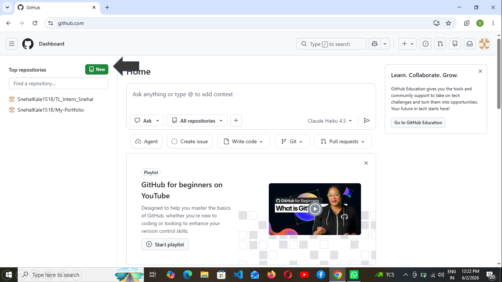
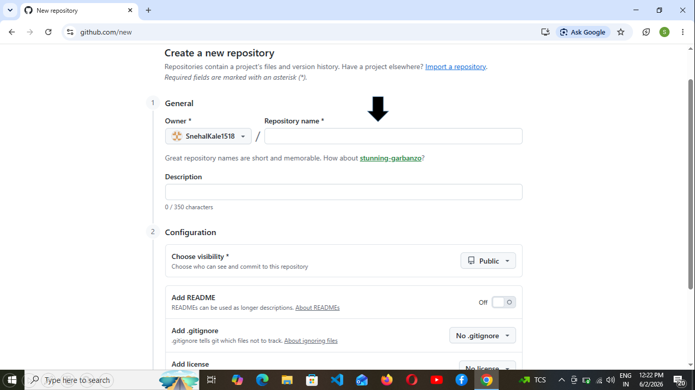
To get started, navigate to your GitHub profile and click the "New" button to create a
repository. Give it a meaningful name and a short description of what it contains.
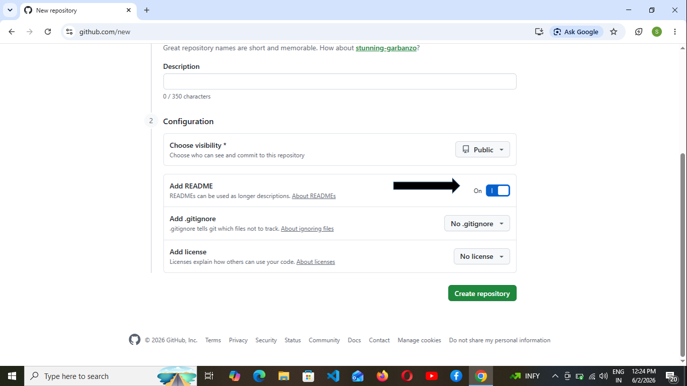
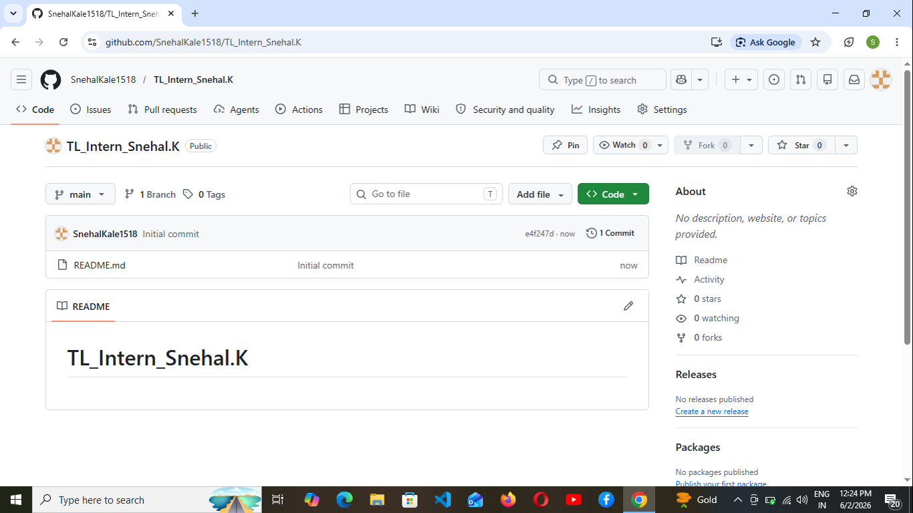
Always enable the "Initialize this repository with a README" option before creating the repo. A
README file is the front page of your project — it explains what the project does, how to set it up, and any
other details a visitor needs.
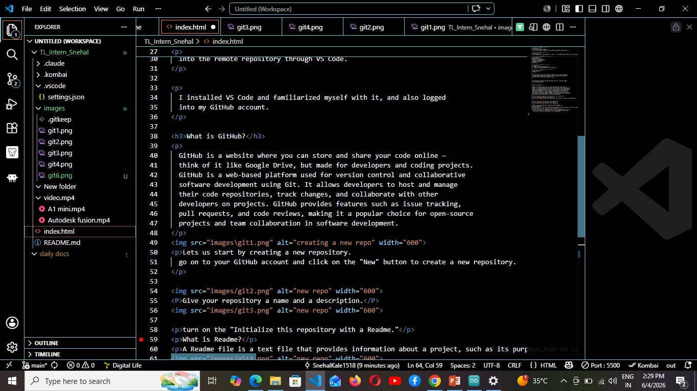
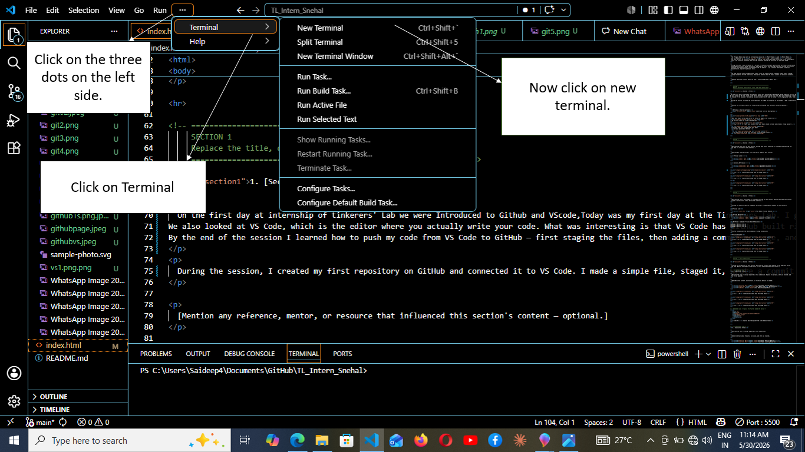
Create a new folder on your local machine to hold your project files. Open VS Code and use File → Open
Folder to load that folder into the editor. Then open the integrated terminal via the three-dot menu →
Terminal → New Terminal.
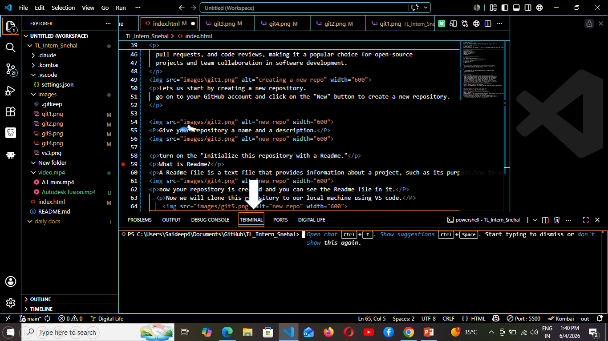
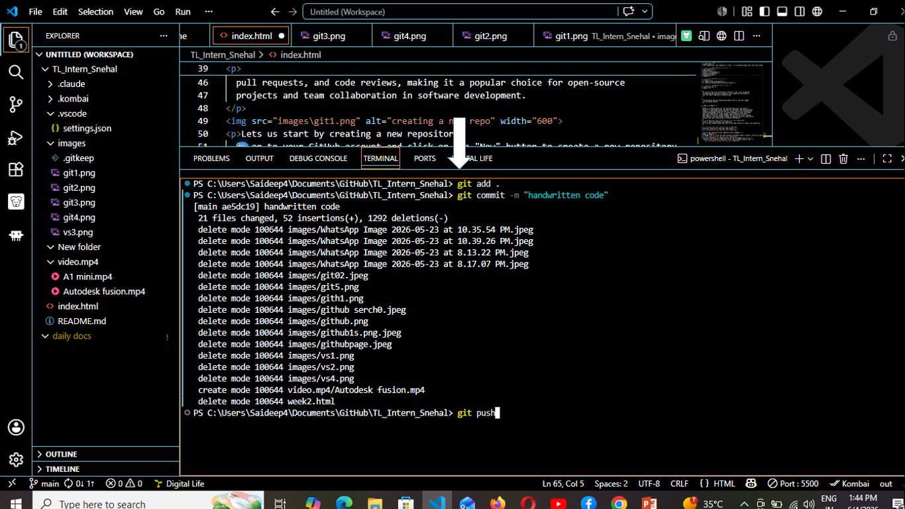
With the terminal open, you are ready to connect your local folder to GitHub and push your files. The six
commands below walk you through the entire process.
// click on any command to learn more
01git initInitializes a new Git repository▼
This command creates a hidden .git folder inside your project folder.
That folder is what makes it a Git repository — it stores the entire history of your project. You only run
this once at the very beginning of a new project.
02git add .Stages all files for commit▼
The dot ( . ) means "add everything in this folder." This command moves your files
into the staging area — a holding space where Git prepares them for the next save.
03git commit -m "first
commit"Saves a snapshot of your files▼
This saves your staged files as a permanent snapshot in your Git history. The
-m flag lets you attach a short message describing what you changed. Every commit is like a save
point in a game.
04git branch -M mainRenames the branch to main▼
By default, older versions of Git create a branch called "master." GitHub now uses
"main" as the standard default branch name. This command renames your branch to match.
05git remote add origin
<URL>Links your local repo to GitHub▼
This connects your local project folder to your online GitHub repository. Replace
<URL> with the actual HTTPS or SSH link from your GitHub repository page.
06git push -u origin mainUploads your code to GitHub▼
This uploads all your committed files to GitHub for the first time. The -u
flag sets "origin main" as the default tracking branch — so from this point forward, you can just type
git push.
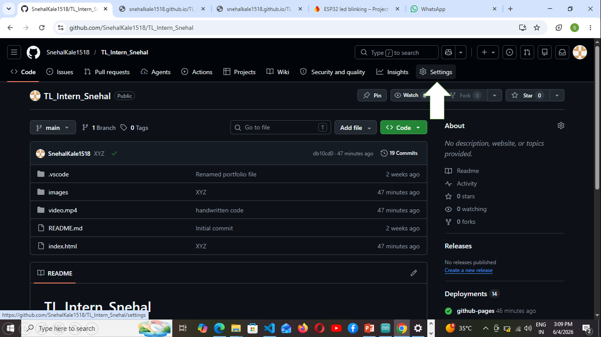
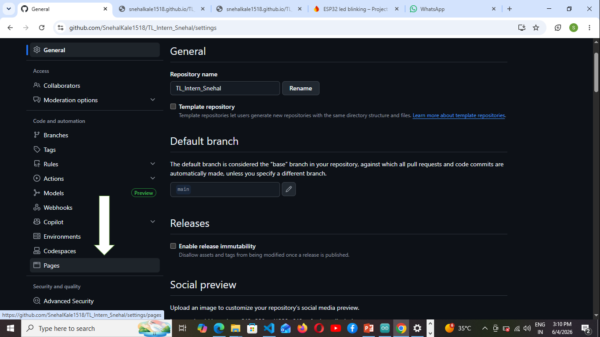
Once your code is on GitHub, you can publish it as a live website for free using GitHub Pages.
Open your repository, click on Settings, then scroll down and select Pages from
the left sidebar.
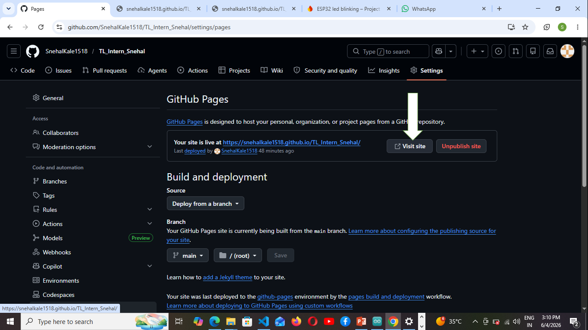
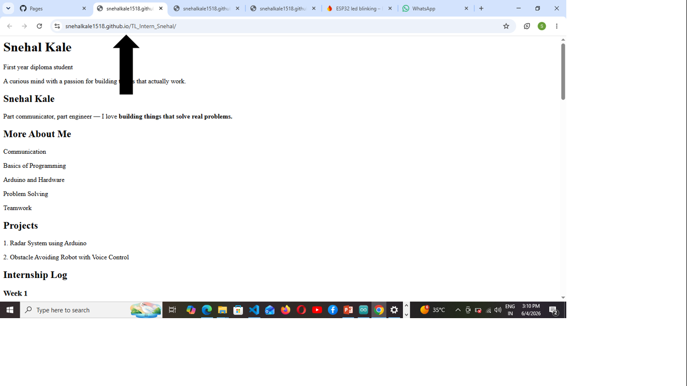
Once GitHub Pages is enabled, a URL in the format username.github.io/repository-name will appear.
Every time you push updated code to the main branch, GitHub automatically rebuilds and redeploys
the site.
← Back to Week 1
Week 1 — Day 2
Tuesday, 19 May 2026 · Inkscape & Fusion 360
On the second day, we were introduced to two powerful design tools: Inkscape for vector
graphics and Autodesk Fusion 360 for 3D CAD modelling.
Inkscape — Vector Graphics Editor
Inkscape is a free and open-source vector graphics editor used for creating scalable SVG files. It provides
tools for designing logos, labels, enclosures, diagrams, and illustrations.
Why Inkscape in an Engineering Internship?
In a product development environment like Tinkerers' Lab, Inkscape exports SVG and DXF files that are directly
compatible with laser cutters and CNC machines. This means a design you create in Inkscape can
be sent straight to the laser cutter and physically cut from acrylic, wood, or cardboard.
Types of Images
1) Raster Images — Composed of a fixed grid of pixels. When you zoom in or scale up a raster
image, the pixels become visible and the image appears blurry. Common formats include JPEG, PNG, and GIF.
2) Vector Images — Defined by mathematical equations that describe shapes, lines, and curves.
They can be scaled to any size without quality loss. Common formats include SVG, AI, and EPS.
🖼 Images
Raster Image Made of pixels
Gets blurry when zoomed
Formats: .jpg .png .gif
Photos & screenshots
Vector Image Made of math equations
Stays sharp at any size
Formats: .svg .ai .eps
Logos, icons & diagrams
How to Install Inkscape
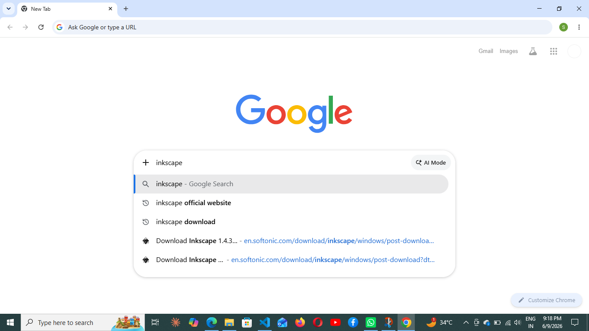
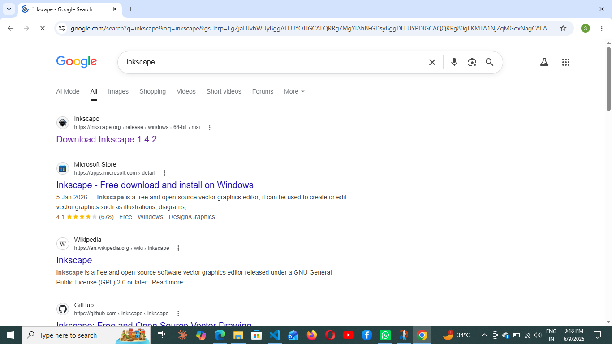
Open Google Chrome and search for Inkscape for Windows. Click on the official download link
from the results.
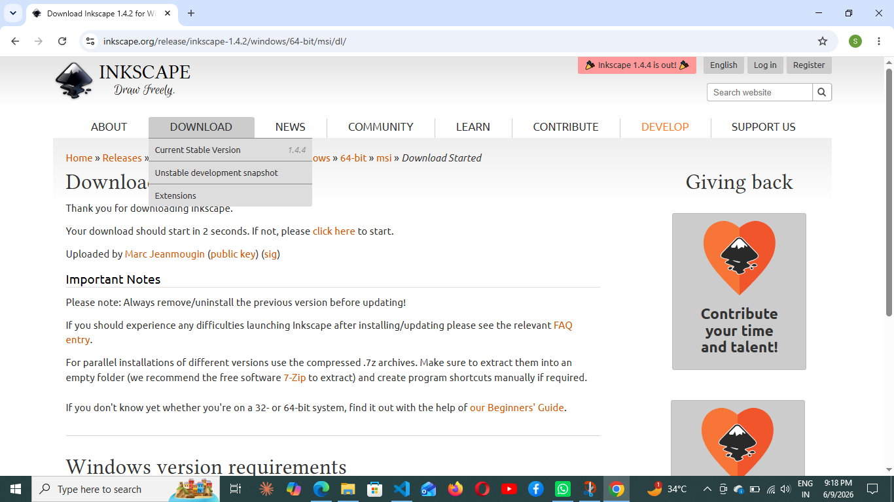
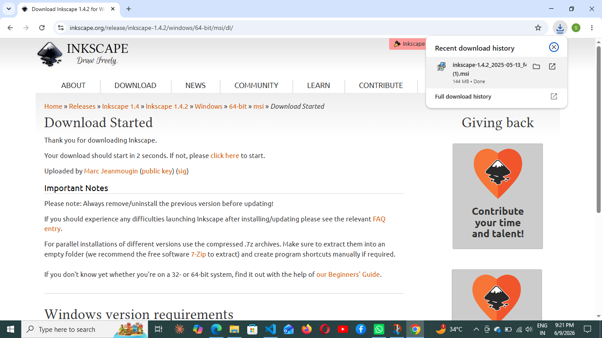
Click the download icon on the Inkscape website to start the download. Wait for the installer to finish
downloading.
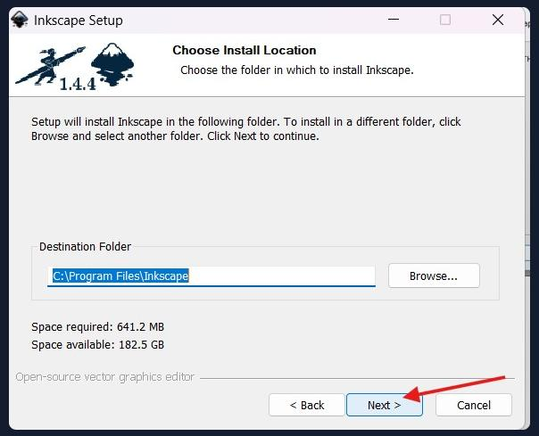
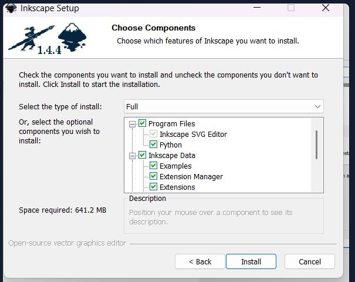
Run the installer, click Next through the setup wizard, then click Install.
Inkscape is now ready to use.
Autodesk Fusion 360 — Parametric CAD Software
Autodesk Fusion 360 is a professional-grade CAD tool used for creating precise 3D models, assemblies, and
technical drawings. In Tinkerers' Lab, Fusion 360 is the primary tool used before sending any part to the
3D printer or laser cutter.
🖥 CAD Software
2D CAD Flat drawings
Technical drawings & blueprints
Formats: .dwg .dxf .svg
Floor plans, circuit diagrams
3D CAD 3D models
Solid & surface modelling
Formats: .stl .step .f3d
Product design, 3D printing
← Back to Week 1
Week 1 — Day 3
Wednesday, 20 May 2026 · Fusion 360 Hands-On
Day 3 was dedicated entirely to hands-on practice with Autodesk Fusion 360. By the end of the session, I had
completed my first proper 3D model — a mug, built entirely from scratch using parametric sketch-based tools.
// Fusion 360 — designing a mug from scratch
Designing a Mug in Fusion 360
The task for today was to design a mug from scratch. The process started with a 2D sketch on the canvas, then
the Revolve tool was used to spin that profile 360° around a central axis — instantly
generating the hollow cylindrical body of the mug.
The trickiest part was adding the handle. It required a separate sketch on a vertical plane and then using the
Extrude tool to give it thickness. Seeing a flat sketch transform into a realistic 3D object
made the whole session click.
Note: the step-by-step screenshots below
document the build in more technical depth using Fusion 360's Extrude, Shell, and Sweep tools — slightly more
detailed than the Revolve-based summary above, since the build used a mix of approaches across the session.
The goal was to model a mug completely from scratch using only parametric sketch-based tools — no templates,
no imports. The workflow followed a logical build order: sketch the body profile → extrude the cylinder →
hollow it with Shell → design the handle path → sweep it into 3D. The four steps below document each key
stage of that process.
This screenshot shows the completed 3D mug model viewed from an isometric (top-front-right) angle. Built
using Extrude for the cylindrical body, Shell to hollow it from the top,
and Sweep to create the curved handle.
The browser panel on the left lists all components — Bodies, Sketches (Sketch4 through Sketch7), and a
Construction folder confirming the multi-sketch workflow used to build this model.
↓
Step 02
Extruding the Top Circle — Cut / Hollow Operation
Solid › Create › Extrude (Shortcut: E)
The Extrude dialog is open on the right. The top circular face is selected (highlighted in
blue) ready to be extruded downward to define the inner cavity depth.
Settings: Profiles: 1 selected, Start: Profile Plane, Direction: One Side, Distance: 0.00 mm, Taper Angle:
0.0°. Active sketch is Sketch7. Status bar shows selected area: 5026.548 mm².
↓
Step 03
Setting Up the Sweep — Handle Profile & Path
Solid › Create › Sweep (Type: Single Path)
The Sweep dialog is open on the right. View is set to LEFT (see view
cube, top-right) to align the profile and path for the handle correctly.
Settings: Type: Single Path, Orientation: Perpendicular, Operation: New Body. Profile awaits the circular
cross-section sketch; Path awaits the curved handle path. A construction plane on the left hosts the
profile sketch.
↓
Step 04
Handle Attached & Shell Applied — Near-Final Model
Solid › Create › Sweep (Join) | Modify › Shell
The mug after Sweep was set to Join (merging the handle into the body)
and Shell was applied to hollow the interior from the top face.
Handle connects at two join points (top and bottom) with smooth transitions. Sketch5 and Sketch6 drove the
Sweep; Sketch7 drove the Extrude for the inner cavity.
📋Session Summary
Software
Autodesk Fusion 360
Model
3D Mug (hollow with handle)
Total Sketches
4 (Sketch4 – Sketch7)
Tools Used
Extrude · Sweep · Shell
Handle Method
Sweep → Join operation
Hollow Method
Shell from top face
This session was a major step in understanding parametric 3D modelling. The most
challenging part was setting up the Sweep correctly — getting the profile plane and path to align required
switching to the LEFT view and using a construction plane. Once the handle was joined and Shell was
applied, the model instantly looked like a real object. Fusion 360's feature history (visible in the
browser panel) also showed how every tool call stacks on top of the previous one, making edits
non-destructive and easy to go back to.
← Back to Week 1
Week 1 — Day 4
Thursday, 21 May 2026 · Logo Design in Inkscape
On Day 4, we returned to Inkscape with a more focused objective — designing an actual logo from scratch.
How I Designed the Logo
I began by opening Inkscape and setting up a 500 × 500 px canvas. I used the Circle
tool with a gradient fill, then added centered text using the Text tool and
Inkscape's alignment tools. The final step was exporting the design as an SVG file.
// Logo design process in Inkscape
Custom Logo Design: A custom logo created using Inkscape. This project
helped me develop skills in vector graphics, typography, and professional logo design.
← Back to Week 1
Week 1 — Day 5
Friday, 22 May 2026 · 3D Printing with Bambu Studio
Slicing and Printing an STL Model on Bambu Lab A1 Mini. Bambu Studio is the official slicer software used with
Bambu Lab printers. During the internship, STL models were imported, configured, sliced, and sent directly to
the printer over LAN using Bambu Studio's Prepare and Preview workflow.
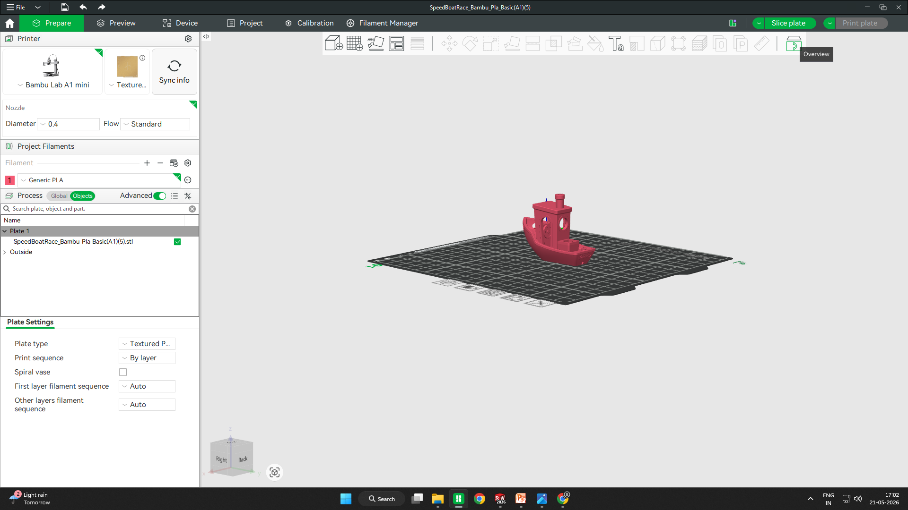
The Prepare tab in Bambu Studio shows the print configuration panel. Key parameters like printer selection,
nozzle diameter, filament type, layer height (0.2mm), and line width are set here before slicing. The 0.20mm
Standard profile was used for a balance of speed and quality.
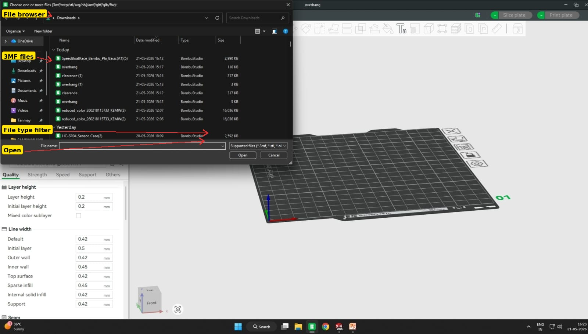
The file browser is used to import supported 3D model formats including .3mf and .stl. Previously saved Bambu
Studio project files (overhang and clearance test models) are visible in the Downloads folder, showing an
organized workflow of test prints done during the session.
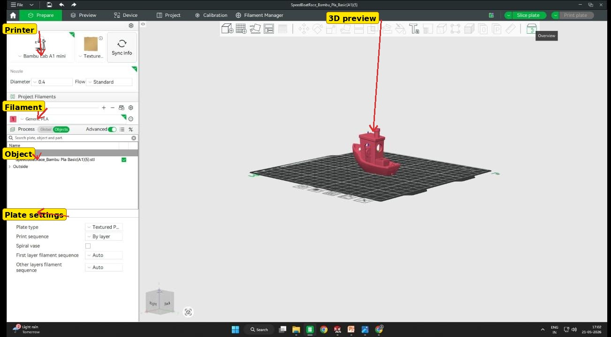
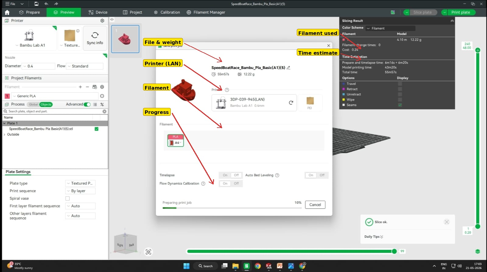
The SpeedBoatRace benchmark STL is loaded onto the virtual print bed. The model appears correctly oriented on
the textured PEI plate, with the filament set to Generic PLA. This view confirms the model is print-ready before
slicing.
← Back to Week 2
Week 2 — Day 1
Monday, 25 May 2026 · 3D Printers at Tinkerers' Lab
Tinkerers' Lab is equipped with the latest Bambu Lab 3D printer lineup — the A1, A1 Mini, P1S, and
H2D. Each model is designed for a different use case.
Filament Types
PLA (Polylactic Acid) — The most beginner-friendly filament. Ideal for prototypes, models, and
display parts.
ABS (Acrylonitrile Butadiene Styrene) — Stronger and more heat-resistant than PLA. Used for
functional parts that need to survive real-world conditions.
PETG (Polyethylene Terephthalate Glycol) — Combines good strength with slight flexibility. A
reliable choice for durable parts.
TPU (Thermoplastic Polyurethane) — A flexible, rubber-like filament used for grips, gaskets,
and protective covers.
🧵 Filament Types
PLA Polylactic Acid
Easy to print, biodegradable
Low temperature required
Prototypes & display parts
ABS Acrylonitrile Butadiene Styrene
Strong & heat resistant
High temperature, needs enclosure
Mechanical & functional parts
Bambu Lab A1 Mini
The A1 Mini is Bambu Lab's compact desktop 3D printer, offering a print speed of up to 500 mm/s and a build
volume of 180 × 180 × 180 mm. Its magnetic PEI build plate means finished prints pop off with a simple flex.
// Bambu Lab A1 Mini printing in real time
Key Specs
Build Volume: 180 × 180 × 180 mm³ · Hot End Max Temp: 300°C · Print Speed: 500 mm/s
· Acceleration: 10,000 mm/s² · Max Bed Temp: 80°C · Supported Filaments:
PLA, PETG, TPU, PVA, ABS, ASA, PC
// Click on any part to explore
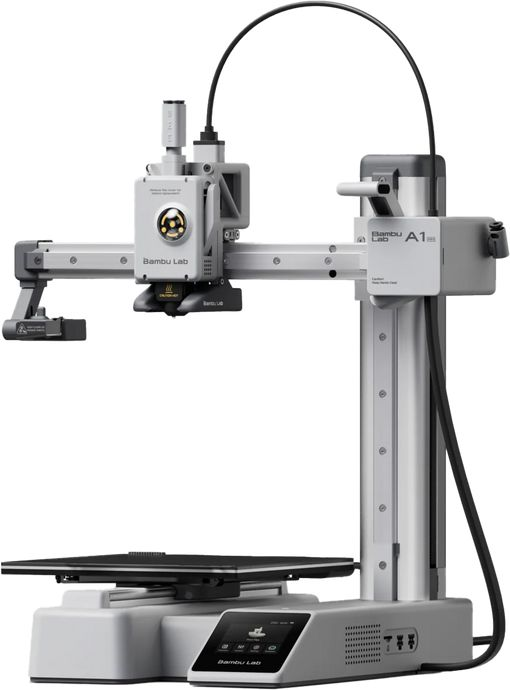
👆 Click any glowing dot on the printer to explore its parts
Bambu Lab H2D
The H2D is Bambu Lab's flagship industrial-grade 3D printer. Its standout feature is the dual nozzle
system, enabling multi-color prints and soluble support structures. With a build volume of 350 ×
320 × 325 mm and AI-powered quality monitoring, the H2D represents the cutting edge of desktop additive
manufacturing.
// Bambu Lab H2D — dual nozzle system in action
Key Specs
Build Volume: 350 × 320 × 325 mm³ · Dual nozzle, Max Hotend Temp: 350°C · Print
Speed: 1000 mm/s · Heated Chamber: up to 65°C · Optional 10W or 40W laser module
← Back to Week 2
Week 2 — Day 2
Tuesday, 26 May 2026 · Phone Stand Design in Fusion 360
I tried creating a phone stand with my name using Autodesk Fusion 360 and 3D printing it on the H2D.
// Designing a personalised phone stand
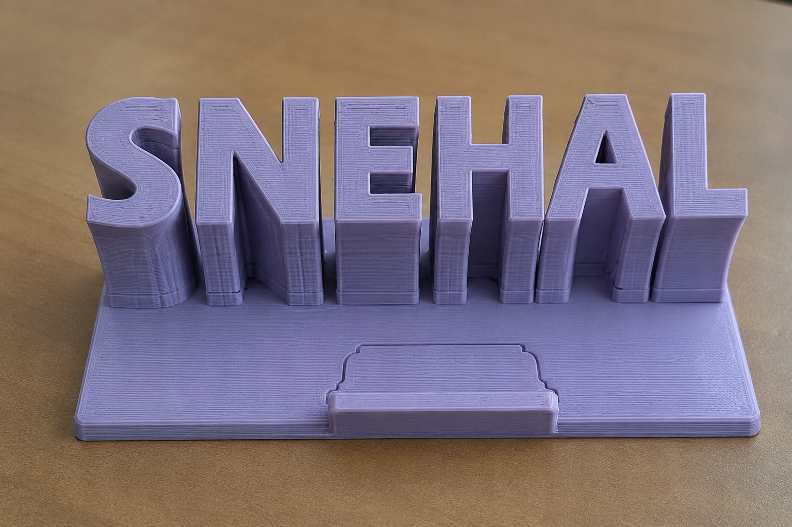
← Back to Week 2
Week 2 — Day 3
Wednesday, 27 May 2026 · Design Thinking Session
About the Session
The session was part of the Summer Internship Program 2026 powered by Tinkerers' Lab, Sanjivani
University, held on 26th May 2026.
Mentor:Dr. Kiran Wakchaure — our internship mentor who guided us throughout
the program and organized this session for the Summer Internship participants.
Speaker: Prof. Srilalitha Girija Kumari Sagi — International Business Strategist,
Cross-Cultural Management Expert, and Innovation & Entrepreneurship Mentor with extensive experience guiding
students and professionals across industries.
The session was built around three core pillars:
💡 Innovate — Move beyond obvious solutions. Generate meaningful ideas by questioning
assumptions and looking at problems from fresh angles.
🧠 Empathize — Understand the real needs of the people you are designing for. The best
engineering solutions come from truly listening to users, not just solving what seems obvious on the surface.
🚀 Implement — Ideas only create impact when they are built and tested. The session emphasized
that action and iteration matter more than perfection.
What is Design Thinking?
Design Thinking is a human-centered approach to innovation and problem solving. Unlike traditional engineering
approaches that start from a technical solution, Design Thinking starts from the user's
perspective — their pain points, behaviors, and needs — and works backward toward a solution.
The five stages of Design Thinking are: Empathize → Define → Ideate → Prototype → Test. This
is not a linear process — you can loop back at any stage based on what you learn from testing.
Key Takeaways from the Session
Prof. Sagi emphasized that as engineering students, we often rush straight to building — but the most important
step is understanding who you are building for and why. A technically perfect product that
does not solve a real problem has no value.
We were also introduced to the concept of rapid prototyping — the idea that building a rough,
quick version of your idea and testing it with real users is far more valuable than spending weeks perfecting
something in theory. Fail fast, learn fast, improve fast.
One particularly memorable point was about creative confidence — Prof. Sagi encouraged every
student to believe that creativity is not a talent you are born with, but a skill you develop through practice,
observation, and a willingness to be wrong.
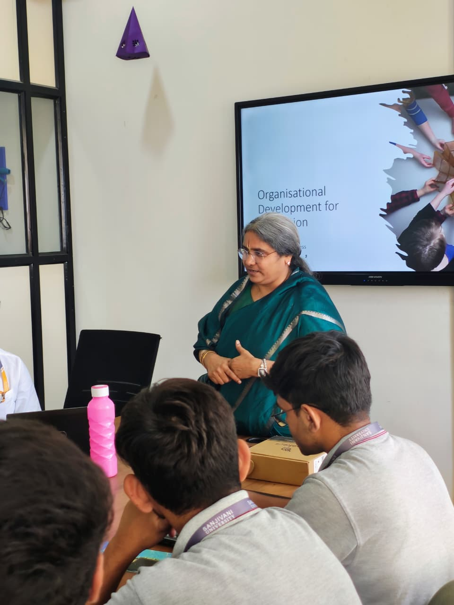
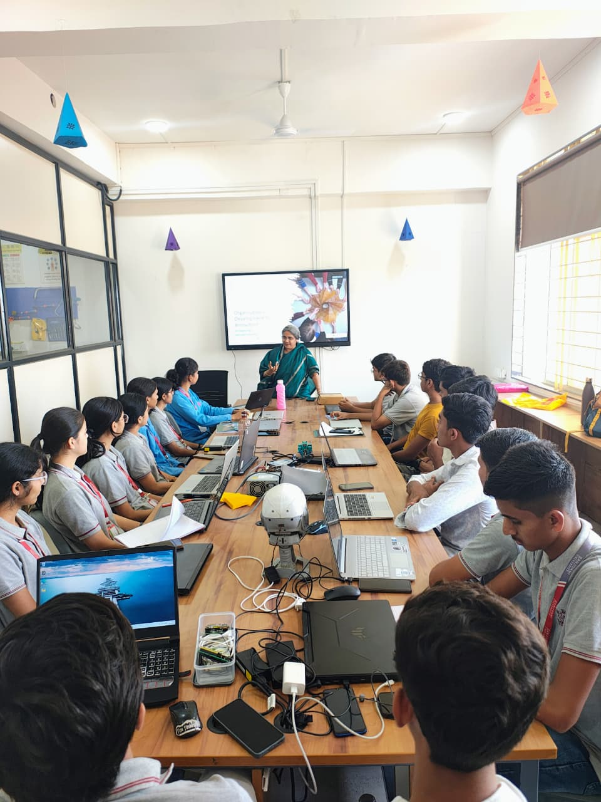
During the session, students were grouped and given a real-world challenge to work through using the Design
Thinking framework. We had to empathize with a user group, define their core problem, brainstorm ideas, and
present a rough solution — all within a single session.
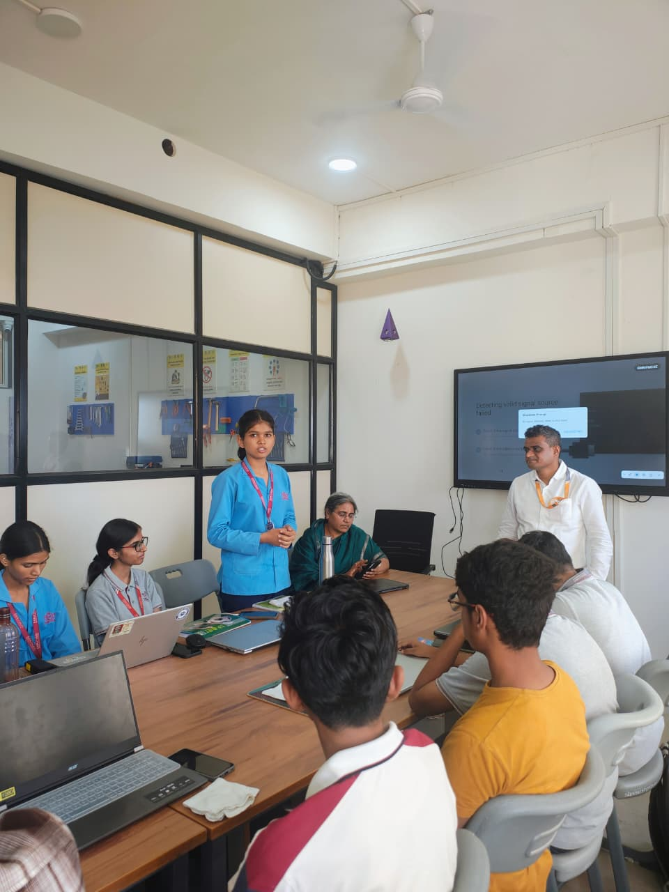
My Reflection
This session genuinely changed how I think about building things. Before, I would jump straight into
designing a circuit or writing code whenever I had an idea. After this session, I understand that the most
important questions to ask first are — Who is this for? What problem does it actually solve? Have I
spoken to anyone who has that problem?
I also realized that Design Thinking is directly applicable to the hardware and embedded systems work we do
in Mechatronics. When designing a robot or an IoT device, the physical interface, the user experience, and
the real-world context matter just as much as the technical implementation.
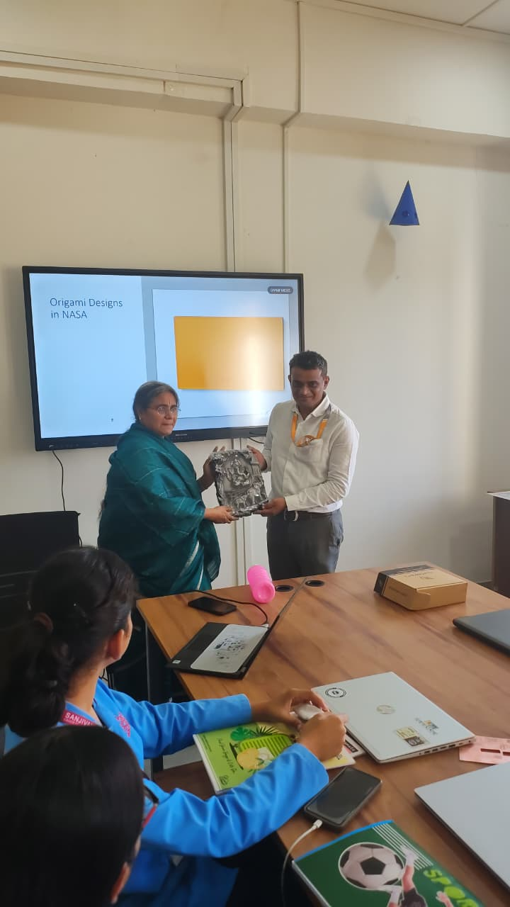
← Back to Week 2
Week 2 — Day 4
Thursday, 28 May 2026 · Laser Cutting
For laser cutting we used a software called LaserCAD. LaserCAD is an integrated CAD/CAM and
machine-control application that streamlines laser cutting and engraving from design to finished parts.
How Does Laser Cutting Work?
// CO2 laser cutter in operation
CO2 Laser Cutter
A CO2 laser cutter is a machine that uses a beam of infrared light — generated by a CO2 gas-filled tube — to
cut, engrave, or etch materials with high precision.
How it works (simplified): Electricity excites CO2 gas and produces a laser beam at a
wavelength of 10.6 μm. Mirrors guide the beam to a focusing lens, which concentrates it to a tiny point on the
material. The intense heat vaporizes or melts the material along the cutting path.
Operations It Performs
Cutting — Full depth cut through the material (slow speed, high power).
Engraving — Surface-level marking and etching (fast speed, low power).
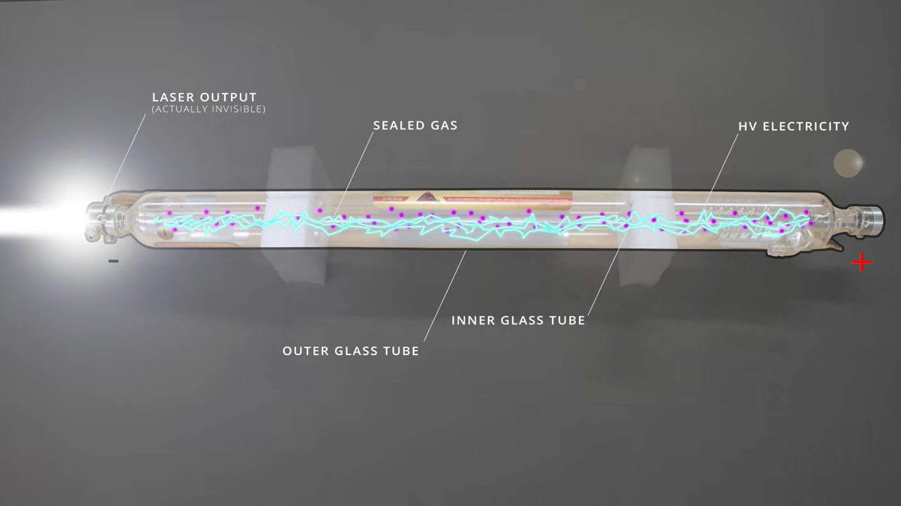
High voltage electricity excites a mix of CO2, nitrogen, and helium gas inside the tube, causing CO2 molecules
to release infrared light. This beam bounces between two mirrors to amplify it, then exits through a partially
reflective mirror toward the cutting head.
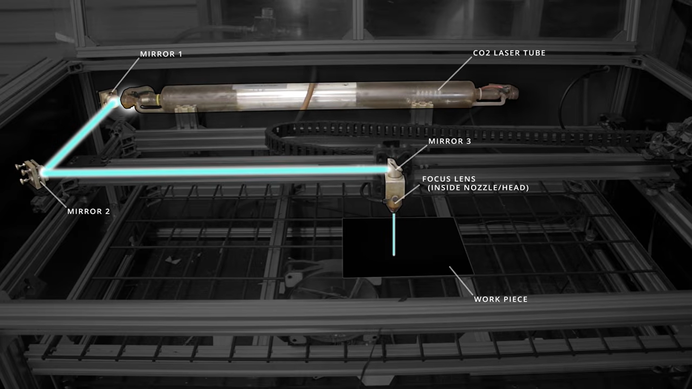
The machine has an aluminum frame with a honeycomb work bed at the bottom. A large glass CO2 laser tube runs
horizontally across the top. The beam travels from the tube through three mirrors before being focused by a lens
in the cutting nozzle onto the material below.
Chiller
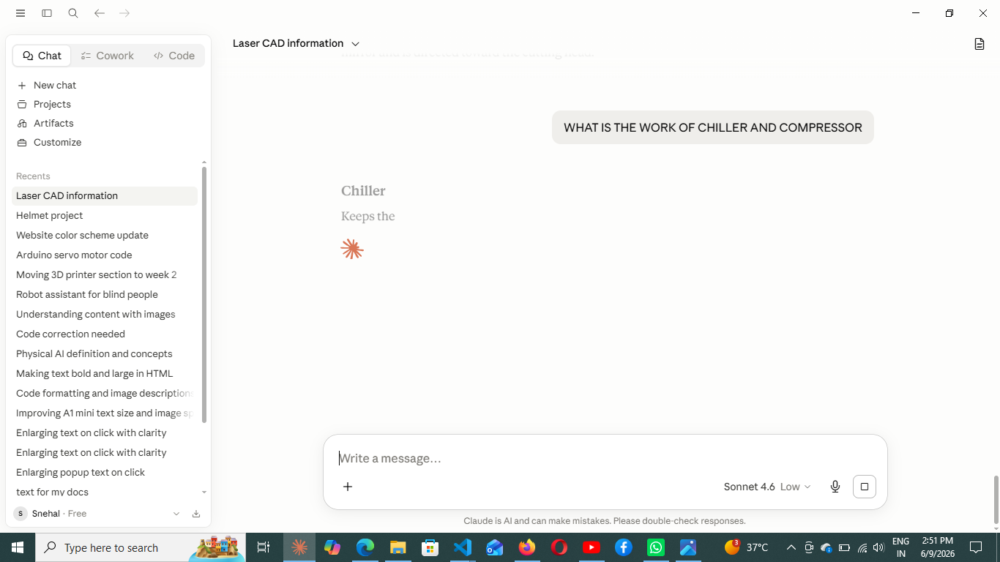
A chiller is a water cooling device that continuously circulates cold water through the CO2 laser tube to
absorb and remove the heat generated during lasing. Without it, the tube overheats and cracks within minutes.
Most laser cutters use a CW-3000 or CW-5000 series industrial chiller, maintaining water temperature around
20–25°C for safe operation.
Compressor
A compressor supplies pressurized air through a pipe to the laser cutting head. This air is blown directly onto
the cutting point to blow away smoke and debris, cool the material, protect the focus lens, and improve cut
quality. Most laser cutters use a compressor set to around 0.2–0.5 MPa depending on the material being cut.
← Back to Week 2
Week 2 — Day 5
Friday, 29 May 2026 · Arduino IDE & Microcontrollers
On this day we were introduced to Arduino IDE. As I had previously worked on IoT projects, I was familiar with
the basics and started working on simple sketches such as blinking an LED and controlling it with a phone.
First we installed Arduino IDE.
// Installing Arduino IDE step by step
What is Arduino IDE?
Arduino IDE is the software where you write and upload code to your Arduino board. You type your instructions,
hit Upload, and the board starts executing them — whether it is rotating a servo, reading a sensor, or blinking
an LED.
Before this internship, I built two Arduino projects — a Radar System and a Voice-Controlled Obstacle Avoiding
Robot. Both gave me a solid base in hardware and coding before joining the lab.
What is a Microcontroller?
A microcontroller is a small chip that can read inputs, process them, and control outputs — all on its own.
Think of it as a tiny computer on a single chip. In the lab, we were introduced to different types: Arduino UNO,
Arduino Nano, Arduino Mega, ESP32, and Raspberry Pi Pico.
// LED blinking on Arduino — changing delay to vary speed
We tried changing the delay in the sketch to notice the difference in blinking speed.
← Back to Week 2
Week 2 — Day 6
Saturday, 30 May 2026 · ESP32 + Firebase Realtime Database
On this day, I worked on connecting the ESP32 microcontroller to Google
Firebase — a cloud platform that stores and syncs data in real time over the internet. The goal was
to read temperature and humidity values from a DHT11 sensor attached to the ESP32, push those
readings to Firebase over WiFi, and display them live on a web dashboard.
This was my first time working with a cloud database in a hardware project. Previously I had only used the
ESP32 for simple LED control — this session showed me how the same board can become a fully connected IoT device
that streams live sensor data to any browser in the world.
What is Firebase?
Firebase is a Backend-as-a-Service (BaaS) platform developed by Google. It gives developers
ready-made cloud infrastructure — authentication, storage, hosting, and most importantly for IoT projects, a
Realtime Database — so you do not have to build and manage your own server.
For this project, Firebase acts as the middle layer between the ESP32 hardware and the web
dashboard. The ESP32 writes sensor data to Firebase, and the dashboard reads it — both in real time, without
either side needing to know about the other directly.
🌡 DHT11 Sensor
ESP32 Microcontroller
Reads sensor · Connects via WiFi
Firebase Realtime Database
Stores & syncs data in the cloud
Web Dashboard
Displays live temperature & humidity
What is a DHT11 Sensor?
The DHT11 is a basic, low-cost digital sensor that measures both temperature
and relative humidity. It has a built-in analog-to-digital converter, so it outputs a clean
digital signal directly — no extra ADC circuit needed.
How it works: Inside the DHT11 is a NTC thermistor (which changes resistance
with temperature) and a capacitive humidity sensor (which changes capacitance as moisture
levels change). A small onboard chip reads both values and sends them out as a single digital pulse over one
data wire connected to the ESP32.
Temperature Range
0°C – 50°C
Temperature Accuracy
± 2°C
Humidity Range
20% – 80% RH
Humidity Accuracy
± 5% RH
Operating Voltage
3.3V – 5V
Data Protocol
Single-wire digital
Sampling Rate
1 reading / second
Pins
VCC · DATA · GND
How ESP32 + DHT11 + Firebase Work Together
The DHT11 sensor is wired to one of the ESP32's GPIO pins. Every few seconds, the ESP32 sends
a pulse on that pin and the DHT11 responds with the current temperature and humidity values encoded as a digital
signal.
The ESP32 then connects to your local WiFi network using its built-in WiFi chip and sends those readings to
Firebase using the Firebase_ESP_Client Arduino library. Inside Firebase, the data is stored as
a simple JSON tree:
The web dashboard reads this same path in Firebase and updates the displayed values automatically whenever new
data arrives — no page refresh needed. This is the core feature of Firebase Realtime Database:
any change is pushed to all connected clients instantly.
Wiring — DHT11 to ESP32
DHT11 Pin
ESP32 Pin
Notes
VCC
3.3V
Power supply
DATA
GPIO 4
Digital data pin — change if yours differs
GND
GND
Common ground
Arduino Code — ESP32 Reading DHT11 and Pushing to Firebase
The following screenshots walk through the complete Firebase Console setup. Each image has a red
box showing exactly where to click. API keys and email addresses have been redacted.
Step 1 — Open Firebase Studio
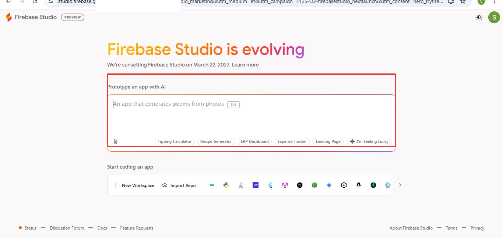
What's happening: Firebase Studio's landing page offers an AI-assisted prompt box to scaffold
a new app, or the option to start coding a workspace from scratch.
Action (red box): The "Prototype an app with AI" input box is highlighted — this is where a
project description is entered. For this project we skipped ahead to the Firebase Console directly.
Step 2 — Firebase Console · Get Started
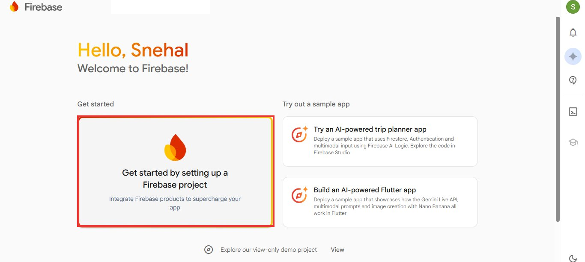
What's happening: The Firebase Console home screen shown immediately after signing in with a
Google account. This is the entry point for creating a new Firebase project.
Action (red box): Click the "Get started by setting up a Firebase project" card to begin the
project creation wizard.
Step 3 — Create Project · Enable Google Analytics
What's happening: During project creation, Firebase asks whether to enable Google Analytics.
Analytics provides usage reporting and integrates with Crashlytics and Cloud Messaging.
Action (red box): The "Enable Google Analytics for this project" toggle is switched on, then
Create Project is clicked to finish setup.
Step 4 — Navigate Project Settings
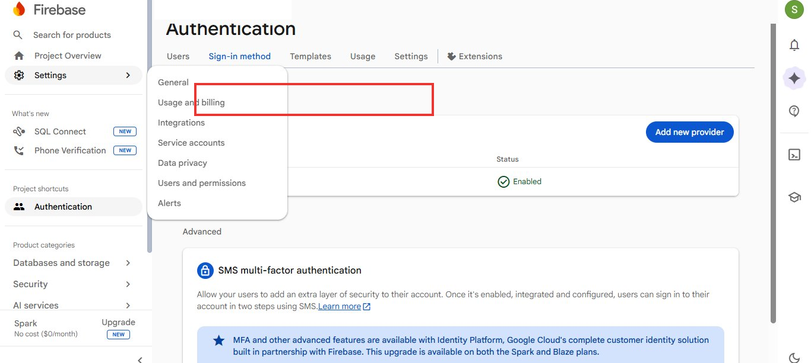
What's happening: Once the project is created, the left-hand navigation gives access to all
Firebase products — Authentication, Realtime Database, Hosting, and more.
Action (red box): Clicking Settings expands the menu showing General, Service accounts, Data
privacy etc. — used in later steps to retrieve SDK configuration details.
Step 5 — Enable Authentication · Google Sign-In
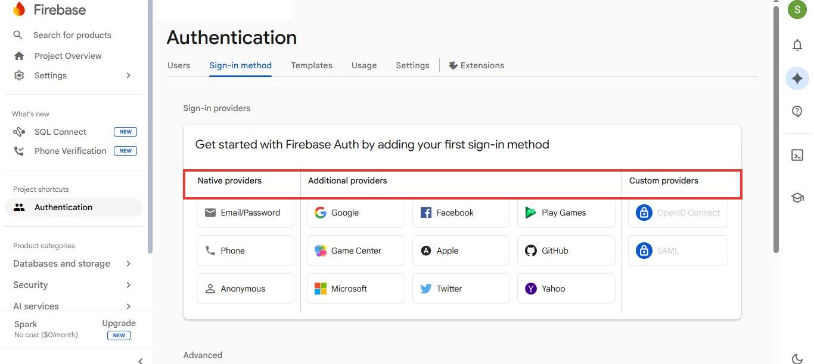
What's happening: The Authentication → Sign-in method tab lists all available sign-in
providers. Enabling at least one provider secures access to the project's data.
Action (red box): The Google provider status now shows "Enabled" — confirming users can
authenticate using their Google account.
Step 6 — Realtime Database · Security Rules
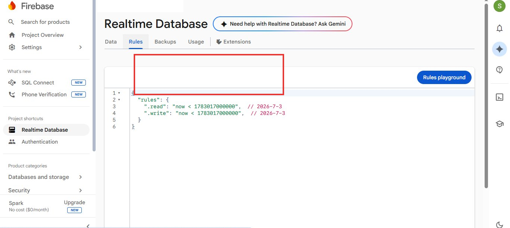
What's happening: The Rules tab defines who can read and write data. Rules can be set to allow
access only until a certain timestamp — useful for temporary testing.
Action (red box): The rules editor shows .read and .write set with a time-based condition,
allowing the ESP32 to write sensor data during development.
Step 7 — Create the Realtime Database
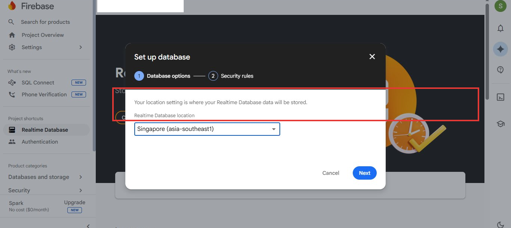
What's happening: Before data can be stored, a Realtime Database instance must be created and
a server region chosen. This determines where data is physically hosted.
Action (red box): In the Set up database dialog, the location is set to Singapore
(asia-southeast1), then Next is clicked to proceed to security rules.
Step 8 — Retrieve Admin SDK Configuration
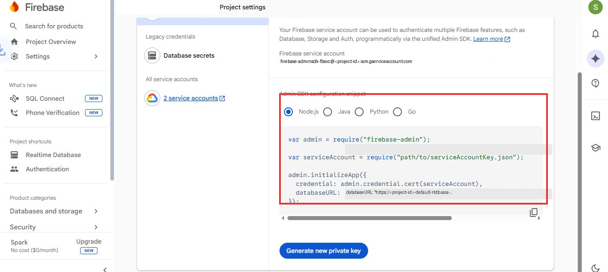
What's happening: The Service Accounts tab under Project Settings provides the Firebase Admin
SDK configuration snippet, including the service account credentials and database URL.
Action (red box): The Node.js Admin SDK snippet shows the initializeApp() call with the
service account credential and databaseURL — sensitive identifiers have been redacted.
Step 9 — Register a Web App
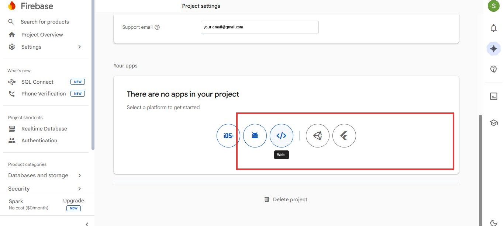
What's happening: To get the Web SDK config for the dashboard, a web app must be registered
under Project Settings → General → Your apps.
Action (red box): The Web platform icon </> is selected to register a new web app and
generate its Firebase configuration object.
What's happening: In Arduino IDE the ESP32 sketch includes WiFi.h and
Firebase_ESP_Client.h. Credentials for the WiFi network and Firebase project are defined as constants at
the top.
Action (red box): The Firebase Credentials block shows where API_KEY and DATABASE_URL
placeholders are filled in with values from the Firebase Console (Steps 8 and 9).
Step 11 — Web App Firebase Configuration Snippet
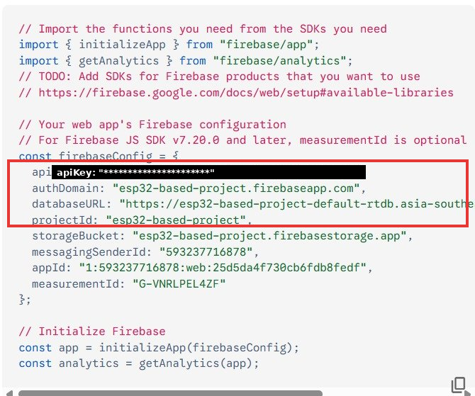
What's happening: After registering the web app, Firebase generates a config object
containing apiKey, authDomain, databaseURL, projectId, and other identifiers needed to initialize the SDK
in the dashboard.
Action (red box): The firebaseConfig object is copied into the dashboard JavaScript. The
apiKey has been blacked out for security — in practice it should also be restricted via Google Cloud API key
settings.
Step 12 — Live Dashboard · Sensor Data Output
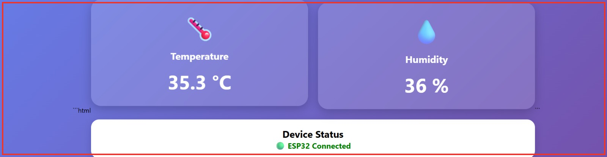
What's happening: The final result — a web dashboard connected to the Firebase Realtime
Database, displaying live readings pushed by the ESP32 + DHT11 sensor.
Action (red box): The Temperature, Humidity, and Device Status cards update automatically
as new values are written to the database — here showing 35.3°C, 36% humidity, and ESP32 Connected,
confirming the end-to-end pipeline is working.
Summary
→ Created a Firebase project and enabled Google Analytics.
→ Enabled Authentication with Google sign-in provider.
→ Created a Realtime Database in the Singapore (asia-southeast1) region.
→ Set security rules to allow read/write during development.
→ Retrieved Admin SDK and Web SDK configuration values (databaseURL, apiKey).
→ Wired the DHT11 sensor to the ESP32 and configured the Arduino sketch.
→ Verified the setup via a live dashboard showing real-time temperature and humidity.
Physical AI = AI that exists in the physical world — robots and machines that can sense,
think, and act, not just software running on a screen.
What is a Microcontroller? A microcontroller is a small computer on a single chip that
contains a processor, memory, and input/output peripherals — all built together.
What is a Microprocessor? A microprocessor is a central processing unit (CPU) that performs
arithmetic, logic, control, and input/output operations but relies on external components for memory and I/O.
Difference Between Microcontroller and Microprocessor
Feature
Microcontroller (MCU)
Microprocessor (MPU)
Components
CPU + RAM + Flash + I/O on one chip
CPU only; needs external parts
Cost
Low — ₹50 to ₹500
High — ₹500 to ₹10,000+
Power
Very low (milliamps)
High (watts)
Speed
8–240 MHz
1–5 GHz+
Task type
Single dedicated task
Multiple tasks at once
Examples
Arduino, ESP32, ATmega328
Intel i5, Raspberry Pi
Microcontrollers
Arduino Uno
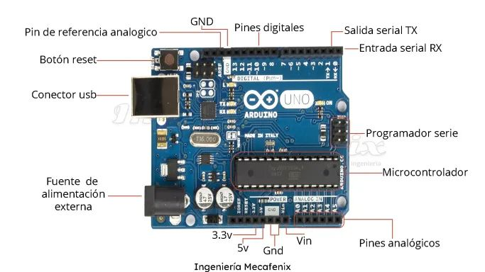
Microcontroller
ATmega328P
Operating Voltage
5V
Clock Speed
16 MHz
Flash Memory
32 KB
SRAM
2 KB
EEPROM
1 KB
Digital I/O Pins
14 (6 PWM)
Analog Inputs
6
Wireless
None
USB
Type-B
ESP32
This was my first time using ESP32. The ESP32 is a microcontroller that has built-in WiFi and Bluetooth
capabilities.
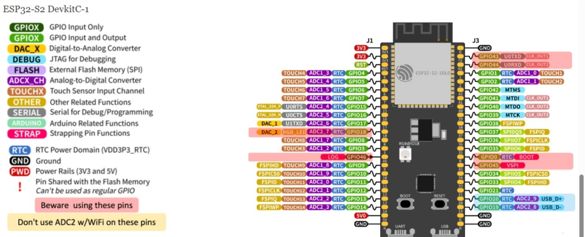
Microcontroller
Xtensa dual-core LX6
Operating Voltage
3.3V
Clock Speed
up to 240 MHz
Flash Memory
4 MB
SRAM
520 KB
Digital I/O Pins
34
Analog Inputs
18 (12-bit ADC)
WiFi
802.11 b/g/n
Bluetooth
v4.2 + BLE
USB
Micro USB
The ESP32 integrates Wi-Fi and Bluetooth, enabling wireless communication between devices. It provides multiple
GPIO pins for interfacing with sensors and actuators. It can be programmed using the Arduino IDE, making it
accessible for both beginners and advanced developers.
← Back to Week 3
Week 3 — Day 2
Tuesday, 2 June 2026 · Servo Motor & Radar Build
Servo Motor
A servo motor is a rotary actuator that provides precise control of position, speed, and movement angle. It is
commonly used in robotics, automation systems, RC vehicles, and embedded projects. A servo motor contains a DC
motor, gears, a control circuit, and a feedback device (usually a potentiometer) that allows it to move to a
specific angle accurately.
// Servo motor sweeping 0° to 180° using the sketch above
Tried making a radar using Arduino and ultrasonic sensor with servo motor.
SG90 Servo Motor — Datasheet Reference
Micro Servo · Positional Rotation · RC/Embedded Systems
Overview
The SG90 is a lightweight, low-cost micro servo motor widely used in robotics, RC vehicles, and
embedded systems projects. It provides precise angular position control from 0° to 180° using a
PWM (Pulse Width Modulation) signal. Internally it combines a DC motor, a reduction gear train, a potentiometer
for position feedback, and a control IC — all in a compact plastic housing.
It is the most commonly used servo in Arduino and ESP32 projects due to its simplicity, compatibility with the
Servo.h library, and 3-wire interface (Power, Ground, Signal).
Electrical Specifications
Operating Voltage
4.8V – 6.0V
Stall Torque (4.8V)
1.2 kg·cm
Stall Torque (6.0V)
1.6 kg·cm
No-load Current
~100 mA
Stall Current
~650 mA
Dead Band Width
10 µs
Mechanical Specifications
Rotation Range
0° – 180°
Operating Speed (4.8V)
0.12 sec / 60°
Operating Speed (6.0V)
0.10 sec / 60°
Gear Type
Plastic (Nylon)
Weight
9 g
Dimensions
22.2 × 11.8 × 31 mm
Connector Wire Length
~25 cm
Horn Type
Plastic, cross/single arm
PWM Signal Specifications
PWM Frequency
50 Hz
Period
20 ms
Pulse — 0°
~1 ms (1000 µs)
Pulse — 90°
~1.5 ms (1500 µs)
Pulse — 180°
~2 ms (2000 µs)
Logic Level
3.3V / 5V compatible
Pin Configuration
Pin / Wire
Function
Notes
Red
VCC — Power Supply
Connect to 5V (not 3.3V — servo needs 4.8–6V)
Brown / Black
GND — Ground
Common ground with Arduino / ESP32
Orange / Yellow
Signal — PWM Input
Connect to any PWM-capable GPIO pin
Internal Components
A servo motor is not just a motor — it is a closed-loop control system built into a small housing. Here is what is inside:
Component
Function
Notes
DC Motor
Provides the rotational force
Runs directly on the supplied voltage (4.8V – 6V)
Gear Train
Reduces speed, increases torque
Nylon / plastic gears in SG90 — metal in higher-end servos
Potentiometer
Tracks the output shaft angle
Acts as position feedback — allows the IC to know current angle
Control IC
Compares PWM signal with potentiometer reading
Drives the motor until actual angle matches the commanded angle
Output Shaft + Horn
Physical connection point for load
Plastic cross/single-arm horn included with SG90
Wiring — SG90 to Arduino UNO
SG90 Wire
Arduino UNO Pin
Notes
Red (VCC)
5V
Use external 5V supply for multiple servos
Brown (GND)
GND
Shared ground essential
Orange (Signal)
Pin 9 (PWM)
Any PWM pin works — 3, 5, 6, 9, 10, 11
⚠ Power Note: Never power the servo directly from the Arduino's 5V pin in high-load applications. The SG90 can draw up to 650 mA at stall — this exceeds the Arduino's onboard regulator limit and may reset or damage the board. Use a separate 5V supply with a shared GND.
#include <Servo.h>
Servo myServo;
void setup() {
myServo.attach(9);
myServo.write(0); // Move to 0°
delay(1000);
myServo.write(90); // Move to 90° (centre)
delay(1000);
myServo.write(180); // Move to 180°
delay(1000);
}
void loop() {
// Hold last position
}
Key Functions — Servo.h Library
// click on any function to learn more
01myServo.attach(pin)Attaches servo to a PWM pin▼
Links the Servo object to a specific Arduino pin. Must be called in setup() before any other servo commands. You can optionally pass min and max pulse widths: attach(pin, min, max) — useful for fine-tuning range.
02myServo.write(angle)Moves servo to a given angle▼
Sends a PWM pulse corresponding to the angle (0–180). The servo immediately begins rotating to that position. Movement is not instantaneous — the servo takes time to reach the target. Use delay() after write() to allow it to arrive.
03myServo.read()Returns last written angle▼
Returns the last angle value passed to write(). Note: this is NOT the actual physical angle measured from the potentiometer — it is just the last value your sketch sent. Useful for tracking position in code logic.
04myServo.writeMicroseconds(µs)Sets pulse width directly in µs▼
More precise than write(angle). Pass the pulse width in microseconds — typically 1000 µs (0°), 1500 µs (90°), 2000 µs (180°). Use this for finer angular resolution or when calibrating a specific servo's actual range.
05myServo.detach()Releases the pin from servo control▼
Stops generating the PWM signal on the attached pin. The servo will hold its last position momentarily, then go limp. Useful when you want to use the pin for something else, or to stop the servo from humming at a held position.
Operating Modes
// POSITIONAL MODE (default)
Moves to and holds a specific angle between 0° and 180°. The control circuit uses the internal potentiometer as feedback to maintain the position against external load. This is the standard mode for the SG90.
// CONTINUOUS ROTATION (modified)
Some servo variants are modified to rotate continuously like a DC motor — clockwise, counter-clockwise, or stop. In this mode, pulse width controls speed and direction rather than angle. The SG90 standard version does NOT support this without hardware modification.
Wednesday, 3 June 2026 · Ultrasonic Sensor & Accelerometer
On this day I tried using an ultrasonic sensor and a 3-axis accelerometer.
Ultrasonic Sensor (HC-SR04)
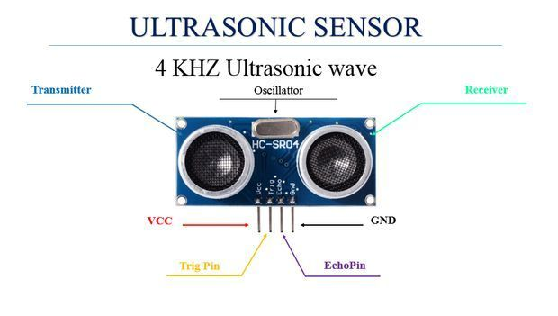
The HC-SR04 is a distance-measuring sensor that uses ultrasonic sound waves to detect objects and calculate
their distance from the sensor. It consists of four pins: VCC, TRIG, ECHO, and GND. The TRIG pin transmits
ultrasonic waves, while the ECHO pin receives the reflected waves. By measuring the time taken for the sound
waves to travel to an object and return, the sensor accurately determines the distance.
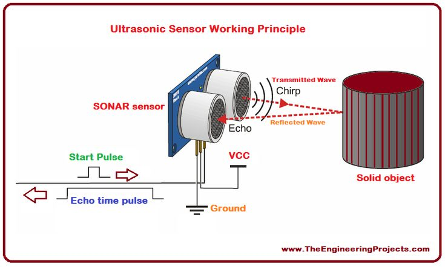
Distance (cm) = (Time × 0.0343) / 2
Tried measuring distance using ultrasonic sensor and ESP32.
The ADXL345 is a small, low-power 3-axis digital accelerometer that measures acceleration along the X, Y, and
Z axes. It can detect both static acceleration (gravity) and dynamic acceleration (movement, vibration, shock,
or tilt).
// ADXL345 3-axis accelerometer live readings
The ADXL345 uses MEMS (Micro-Electro-Mechanical Systems) technology. Inside the sensor is a
tiny suspended structure. When the sensor moves or tilts, this structure shifts slightly, changing its
capacitance. The sensor converts these changes into digital acceleration values for the X, Y, and Z axes.
If you tested the ADXL345 and saw values close to 9.81 m/s² even when it was not moving, that is normal — the
sensor measures all acceleration acting on it, including Earth's gravity. When resting flat on a table:
X ≈ 0 m/s², Y ≈ 0 m/s², Z ≈ 9.81 m/s².
Electronics
Basic electronic components used in the lab include resistors, LEDs, capacitors, breadboards, and jumper wires
— the building blocks of every circuit assembled during the internship.
← Back to Week 3
Week 3 — Day 4
Thursday, 4 June 2026 · Edge Computing Session
We had a session on Edge Computing.
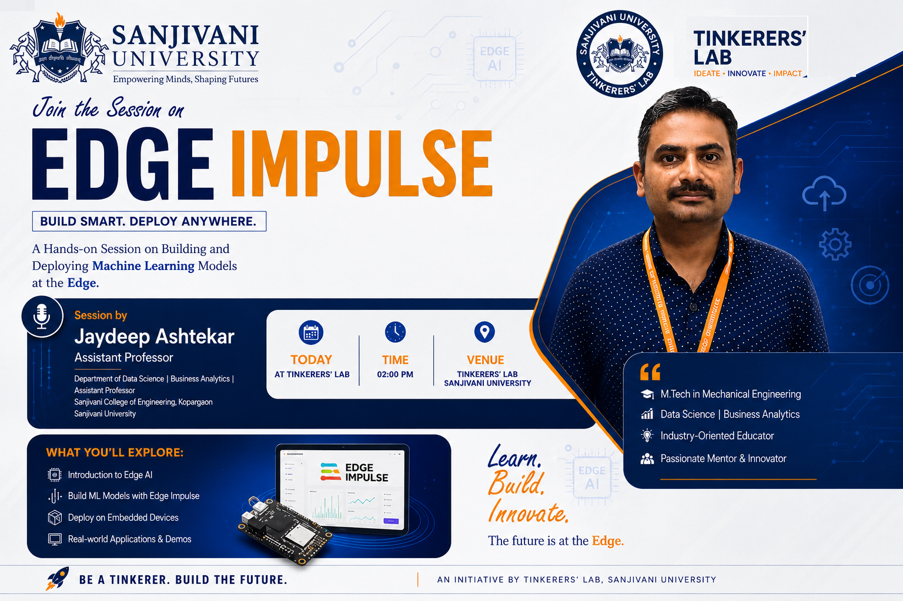
On this day, Tinkerers' Lab organized a hands-on session on Edge Impulse — a platform for building and
deploying Machine Learning models directly on embedded devices. The session was conducted by Prof. Jaydeep
Ashtekar, Assistant Professor at Sanjivani College of Engineering, Department of Data Science and Business
Analytics.
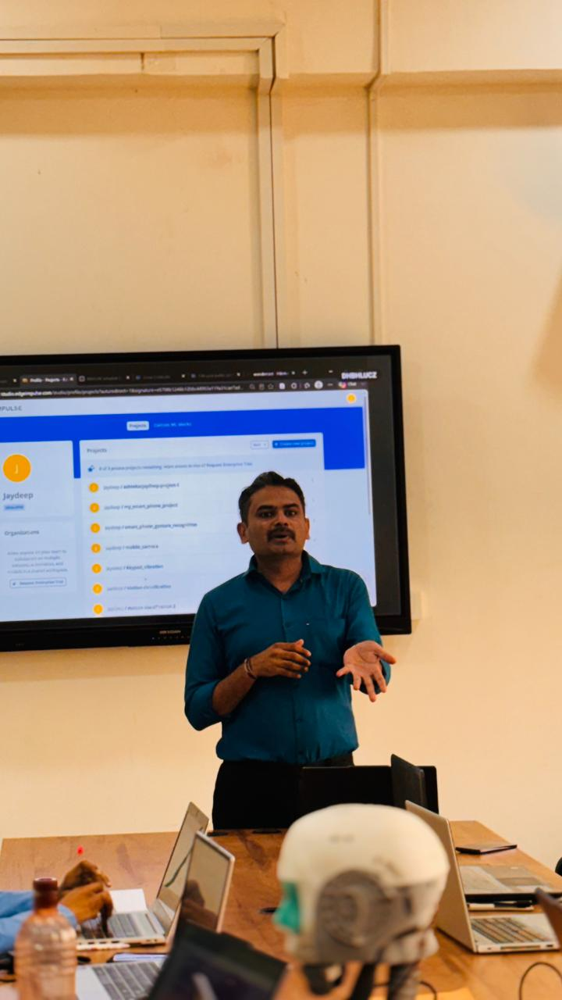
Session Summary — Edge Impulse
Prof. Jaydeep Ashtekar walked us through the Edge Impulse platform live on screen, showing
his own projects including gesture recognition, object detection, and motion classification — all running
directly on embedded hardware.
What made this session special was seeing how a machine learning model that normally requires powerful
cloud servers can be compressed and deployed onto a tiny microcontroller like an Arduino or
ESP32. This was a completely new concept for most of us.
The most important takeaway was understanding that AI does not always need the cloud. With
Edge AI, a device can think and respond on its own — faster, more private, and without needing an internet
connection. This has huge applications in robotics, wearables, and IoT devices.
As someone building projects with ESP32 and Arduino, this session opened my eyes to what is possible next —
adding intelligence directly into the hardware I already work with.
Conclusion: The Edge Impulse session was one of the most eye-opening experiences of the internship. It showed
us that Machine Learning is no longer limited to powerful computers or the cloud — it can run directly on the
same microcontrollers we use every day. For a Mechatronics student working with Arduino and ESP32, this was a
game changer. It gave me a clear direction for what to explore next — combining embedded systems with on-device
AI to build smarter, faster, and more independent hardware projects.
← Back to Week 3
Week 3 — Day 5
Friday, 5 June 2026 · First Soldering Session
First Soldering Session
This was my first time soldering components for an actual project build at Tinkerers' Lab. The soldering
station was set to 300°C — visible on the digital display in the background.
I was soldering header pins onto a small module board. The key technique was to heat the pad and
pin together for 2–3 seconds, then apply solder wire to the joint — not directly to the iron
tip.
Getting the solder to flow cleanly without creating blobs or cold joints took a few tries. By the end of
the session, the connections were clean, shiny, and solid — exactly what a good solder joint should look
like.
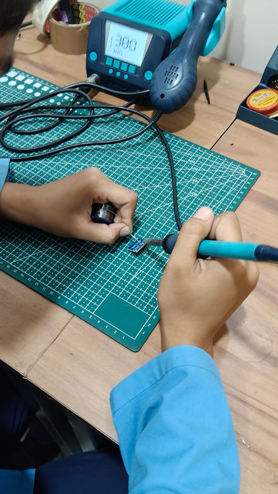
// Soldering components for the project build
What I Observed
Watching the solder melt and flow into the joint in real time made it much easier to understand the
technique. The iron tip needs to stay clean and tinned at all times for heat to transfer properly.
A good solder joint looks shiny and smooth like a small volcano shape around the pin. A
cold joint looks dull and grey — it may still conduct electricity but will fail over time.
This hands-on session gave me the confidence to solder all the remaining components for my project build in
the days ahead.
Now I am starting with my project work. I started by collecting all the electronic components needed for the
build.
On the first day of Week 4, I officially started working on my main internship project — the Rider
Safety Helmet. This is a smart helmet system that automatically detects accidents and sends an
emergency alert with the rider's live GPS location to a contact number via SMS and call.
Project Idea
Every year thousands of road accident victims do not get help in time simply because no one around them knows
what happened or where they are. This helmet solves that problem — the moment an accident is detected, it
automatically alerts emergency contacts without the rider needing to do anything.
How It Works
The MPU-6050 accelerometer and gyroscope sensor continuously monitors the movement of the
helmet. If a sudden impact or abnormal jerk is detected — indicating a crash — the ESP32
triggers the alert system. The Neo-6M GPS module captures the rider's exact location
coordinates and the SIM800L GSM module sends an SMS with the GPS location link and makes an
automatic emergency call to the saved contact number.
Step 1 — Test each component individually to confirm it is working correctly.
Step 2 — Write and test the impact detection code using MPU-6050 jerk calculation.
Step 3 — Integrate GPS and confirm live coordinates are being received.
Step 4 — Connect SIM800L and test SMS and call functionality.
Step 5 — Combine all modules into one complete working system.
Step 6 — Mount everything inside the helmet and do a final test.
Why This Project?
As a Mechatronics student, I wanted to build something that combines embedded systems, wireless
communication, and real-world impact — all three things I have been learning during this internship.
A safety helmet felt like the perfect project because it is practical, meaningful, and uses everything I have
learned — ESP32, sensors, GSM, and GPS — in one single system.
Reference
The initial idea and inspiration for this project came from a LinkedIn post by Aditya Potadar.
His post showcased a similar smart helmet concept which gave me the direction to build my own version using the
components available at Tinkerers' Lab.
After seeing his post, I researched the individual components — ESP32, MPU-6050, Neo-6M GPS, and SIM800L — and
planned how to combine them into a working system that fits inside a real helmet. His work proved that this
kind of project is actually buildable at a student level, which gave me the confidence to take it on as my
internship project.
💡 Inspired by the work of Aditya Potadar — a fellow engineering student who built a
similar smart helmet system and shared it on LinkedIn. Seeing a student-level build of this concept made me
realize it was achievable within my internship timeline and budget.
His post showed the complete hardware setup mounted on a real helmet — ESP32, GPS module, and GSM module
all working together. That single post gave me the blueprint and the confidence to start building my own
version.
Tuesday, 9 June 2026 · Intellectual Property Rights Session
On this day, Tinkerers' Lab organized an expert session on Intellectual Property Rights (IPR)
conducted by Dr. M Sujith — an Innovation Leader and IPR Expert. The session was held on
9th June 2026 at Tinkerers' Lab, Sanjivani University.
The session focused on understanding the value of ideas, how to protect innovations legally, and how to
empower creators with the knowledge of their rights. As engineering students who build projects and come up
with new ideas regularly, this session was extremely relevant and eye-opening.
What We Learned
Dr. Sujith explained how Intellectual Property transforms raw human ideas into valuable
assets — exactly as shown on the slide behind him: "Transforming Ideas into Assets." Human
intellect, when passed through legal protection and IPR frameworks, becomes intangible assets that can be
owned, sold, and monetized.
The four key pillars covered in the session were — Learn about IPR Fundamentals,
Understand Your Rights, Protect Your Innovations, and Empower
Your Ideas.
We were introduced to different types of IP protection including Patents for inventions,
Trademarks for brand identity, and Copyrights for creative works — all of
which are directly applicable to the kind of projects we build as engineering students.
My Takeaway
Before this session, I never thought about protecting the projects I build. After this session, I
understand that every original idea — whether it is a smart helmet, a radar system, or a software tool —
has the potential to be protected as intellectual property. As future engineers, knowing our IP rights is
just as important as knowing how to build the product itself.
← Back to Week 4
Week 4 — Day 3
Wednesday, 10 June 2026 · Soldering on Zero PCB
Soldering Components on Zero PCB
I started the actual hardware build of my project by soldering all the components onto a Zero
PCB. Unlike a breadboard which is only for prototyping, a Zero PCB gives permanent and reliable
connections — essential for a wearable project like a helmet that will experience vibration and movement.
Each component was carefully placed and soldered one by one — making sure the connections were clean,
tight, and correctly positioned before moving to the next one. Multiple colored jumper wires were used to
connect the different modules to the ESP32, keeping track of which wire goes where using a color coding
system.
This was one of the most satisfying parts of the build — watching a collection of loose components slowly
become a structured, organized circuit board.
// Soldering project components on Zero PCB
Why Zero PCB?
A Zero PCB (also called a perfboard or dotted PCB) is a general-purpose circuit board with
a grid of holes where components can be soldered permanently. Unlike a breadboard, connections on a Zero
PCB do not come loose with movement or vibration.
For a helmet project that will be worn and tested in real conditions, having solid permanent connections is
critical. A loose wire on a breadboard could mean the system fails exactly when it is needed most — during
an emergency.
Soldering everything onto the Zero PCB also made the overall circuit much more compact and
organized — important for fitting it neatly onto the helmet without it looking messy or bulky.
How All the Sensors Work Together
The real power of this project is not any single component — it is how all the modules communicate and
work together as one system. Here is the complete flow of how the helmet works from the moment it is
powered on to the moment an alert is sent:
Role of Each Component
🧠 ESP32 — The Brain — The ESP32 is the central controller that runs all the logic. It reads
data from the MPU-6050, calculates the jerk value, decides whether a crash has occurred, triggers the GPS read,
and commands the SIM800L to send the alert. Everything passes through the ESP32.
📐 MPU-6050 — The Crash Detector — This sensor has a 3-axis accelerometer and a 3-axis
gyroscope built into one chip. It communicates with the ESP32 over I2C protocol using just two
wires — SDA and SCL. The ESP32 reads the raw acceleration values on all three axes (X, Y, Z) many times per
second and calculates the jerk — which is the rate of change of acceleration. A normal ride
has smooth, gradual changes. A crash causes a sudden violent spike — and that spike is what triggers the alert.
🛰 Neo-6M GPS — The Location Tracker — The GPS module communicates with the ESP32 over
UART (Serial). It receives signals from satellites and provides accurate latitude and longitude
coordinates. The ESP32 parses this data using the TinyGPS++ library and formats it into a
Google Maps link that is included in the emergency SMS.
📡 SIM800L — The Communicator — The SIM800L is a GSM module that connects to a mobile network
using a SIM card. It also communicates with the ESP32 over UART using AT commands. When
triggered, it sends an SMS containing the rider's GPS location link and makes an automatic voice call to the
saved emergency contact number.
🔋 Power System — TP4056 + MT3608 — The Li-Po battery powers the entire system. The
TP4056 is a charging module that safely charges the Li-Po battery via USB. The
MT3608 is a boost converter that steps up the battery voltage to a stable level required by the
SIM800L — since the GSM module needs more current than the ESP32 can supply directly.
Communication Protocols Used
Module
Protocol
Pins Used
MPU-6050
I2C
SDA → GPIO21 · SCL → GPIO22
Neo-6M GPS
UART
TX → GPIO16 · RX → GPIO17
SIM800L GSM
UART + AT Commands
TX → GPIO4 · RX → GPIO2
TP4056 Charger
Direct Power
Connected to Li-Po battery terminals
MT3608 Booster
Direct Power
Powers SIM800L separately
← Back to Week 4
Week 4 — Day 4
Thursday, 11 June 2026 · Expert Session on Digital Visibility
On Day 4 of Week 4, Tinkerers' Lab organized an Expert Session on Digital Visibility — a
topic that is incredibly relevant for every engineering student stepping into the professional world. The
session was held on 11th June 2026 at Tinkerers' Lab, Sanjivani University at
10:30 AM.
👨🏫
Prof. Dhananjay Kumbhar
Assistant Professor · Director – Training and Placement · Sanjivani University
"Your digital presence is your first impression in the professional world — make it count."
Prof. Dhananjay Kumbhar is a distinguished educator and institutional leader at Sanjivani University. As the
Director of Training and Placement, he has been instrumental in bridging the gap between
students and industry — helping hundreds of students build their professional profiles and secure
opportunities in top companies.
Recognized for his contributions in education management, institutional excellence, and academic
leadership, Prof. Kumbhar brings a unique perspective that combines academic knowledge with
real-world industry expectations. His session on Digital Visibility was one of the most practically useful
sessions of the entire internship.
Training & PlacementAcademic LeadershipDigital PresenceDistinguished SpeakerInstitutional Excellence
What is Digital Visibility?
Digital Visibility refers to how easily you can be found, recognized, and remembered on the
internet — especially in a professional context. In today's world, before any recruiter calls you
for an interview, they search for you online. What they find — or do not find — can make or break your
opportunity.
For engineering students, Digital Visibility means having a strong presence on platforms like LinkedIn,
GitHub, and personal portfolio websites — showcasing your projects, skills, certifications, and
achievements in a way that is visible to the right people.
Key Points from the Session
🌐 Your Online Profile is Your Resume 2.0 — A LinkedIn profile that is complete, active, and
well-written can open doors that a paper resume never could. Recruiters actively search LinkedIn for candidates
— if you are not there, you simply do not exist to them.
📌 Consistency Across Platforms — Your name, photo, and professional headline should be
consistent across LinkedIn, GitHub, and any other platform you use. Inconsistency creates confusion and looks
unprofessional.
🚀 Share What You Build — Every project you complete, every certificate you earn, every new
skill you learn should be shared publicly. This creates a trail of evidence that proves your abilities far
better than simply listing them on a resume.
🔗 GitHub is Your Technical Portfolio — For engineering students, GitHub is not optional. A
well-maintained GitHub profile with clean repositories, good README files, and regular commits shows that you
are actively building and learning.
💡 Personal Branding Starts Now — You do not need to wait until you graduate to start building
your professional brand. Every post, every project share, every meaningful comment you make online contributes
to how the world sees you professionally.
My Takeaway
This session hit close to home because I realized that I had been building projects throughout this internship
but barely sharing any of it publicly. Prof. Kumbhar's session made me understand that building is only
half the work — sharing it is the other half. From this point forward, I committed to keeping my
GitHub updated, sharing my internship work on LinkedIn, and making sure that the projects I build are visible to
the world.
As someone who has already built a Radar System, a Voice-Controlled Robot, and now a Rider Safety Helmet — I
have real work to show. This session gave me the push to actually show it.